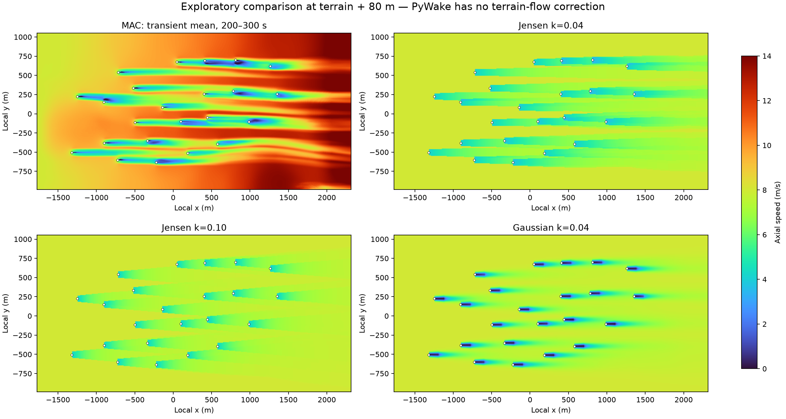
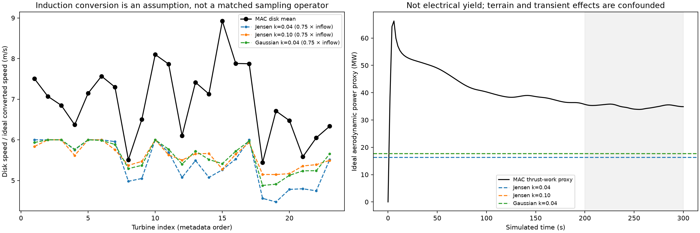

23 台风机 · 8 m/s 来流 · MAC 200–300 秒平均 · 实际运行 PyWake 2.6.20
探索性对照，不是精度验证。本次 PyWake 没有地形流修正；MAC 包含地形但没有湍流闭合，且尚未证明稳态。WAsP CFD 尚无工程或结果可比较。
| 模型 | 理想气动功率代理 | PyWake 尾流损失 |
|---|---|---|
| Jensen k=0.04 | 16.31 MW | 24.12% |
| Jensen k=0.10 | 17.72 MW | 17.58% |
| Gaussian k=0.04 | 17.68 MW | 17.75% |
| MAC，200–300 s | 34.99 MW | 缺少同条件无风机控制组 |
上述功率不是实际发电功率或年发电量。差距不能全部解释为地形影响，也不能据此判定哪个模型更准确。


完整报告与假设 · 数值结果 · WAsP CFD 方法说明